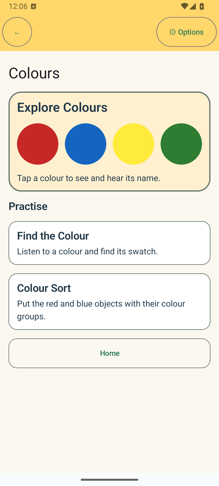

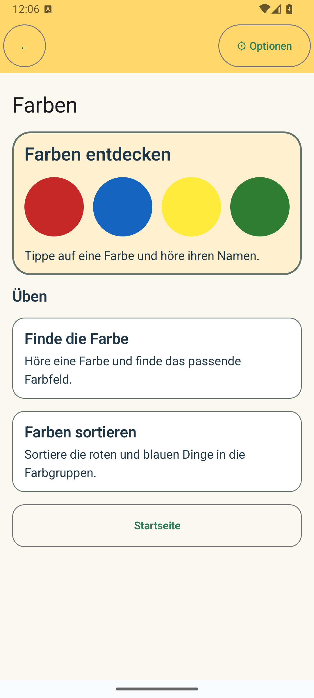
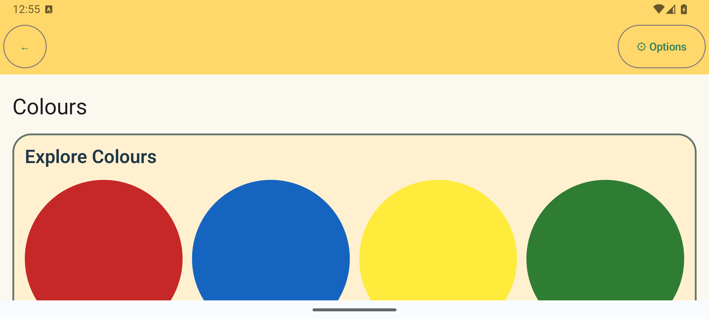
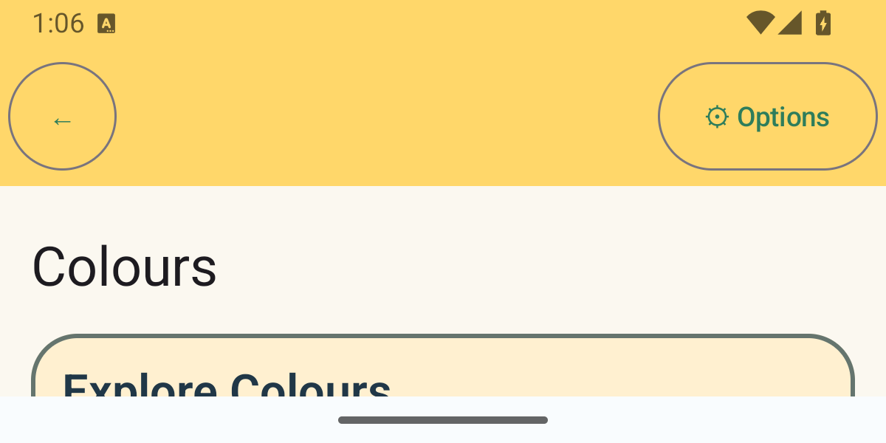
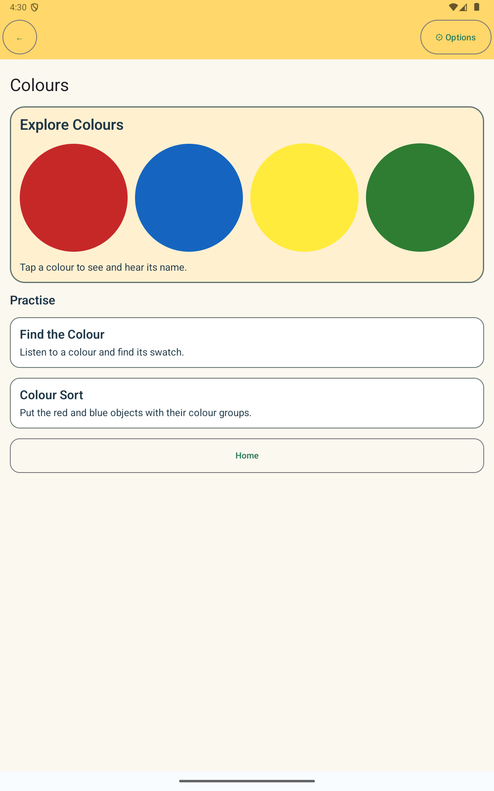
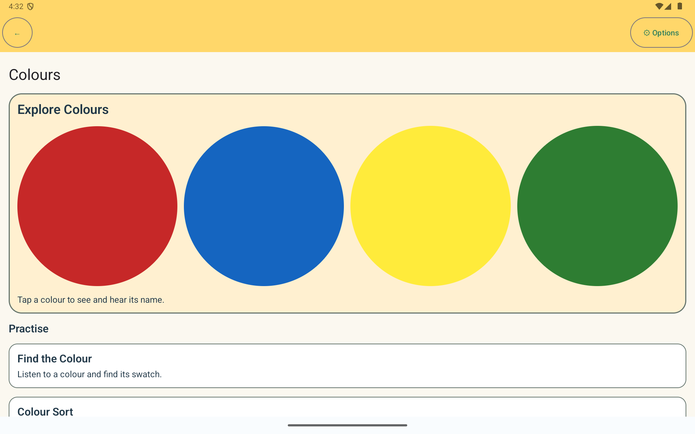
Actual API 35 Android emulator captures. Phone portrait uses 1080×2400; phone landscape 2400×1080; short landscape 1200×600; tablet viewport 1200×1920 portrait and 1920×1200 landscape. Tablet and short-landscape captures are display-size overrides on the disposable API 35 AVD, not separate hardware devices. German 2× is the device font-scale setting. Each caption records exact image dimensions.
The yellow swatch is the corrected clear-yellow sample. Explore has no score or completion state. The emulator has no installed offline voice, so the Find German capture shows the existing speech-unavailable guidance; this does not assess pronunciation quality.








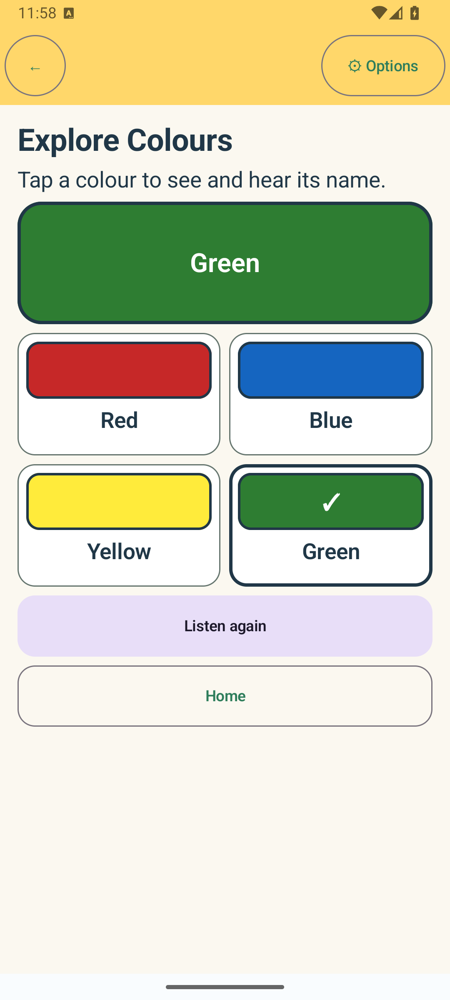
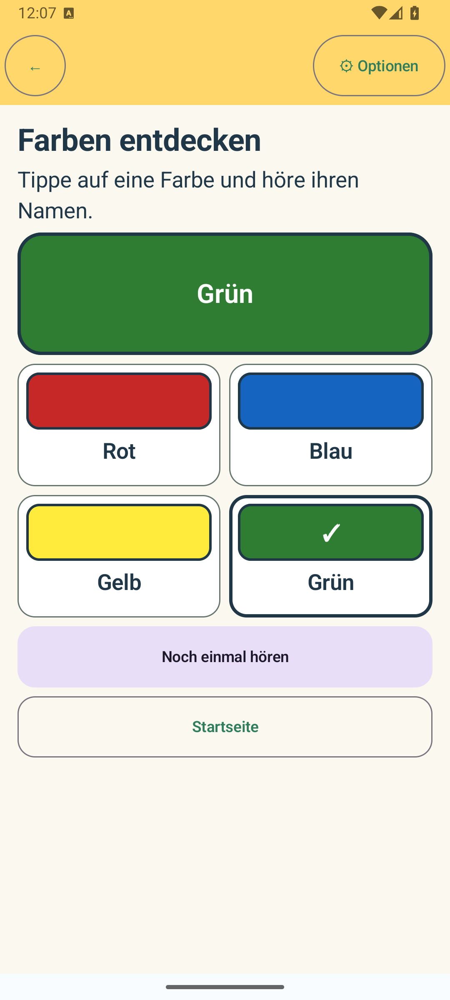
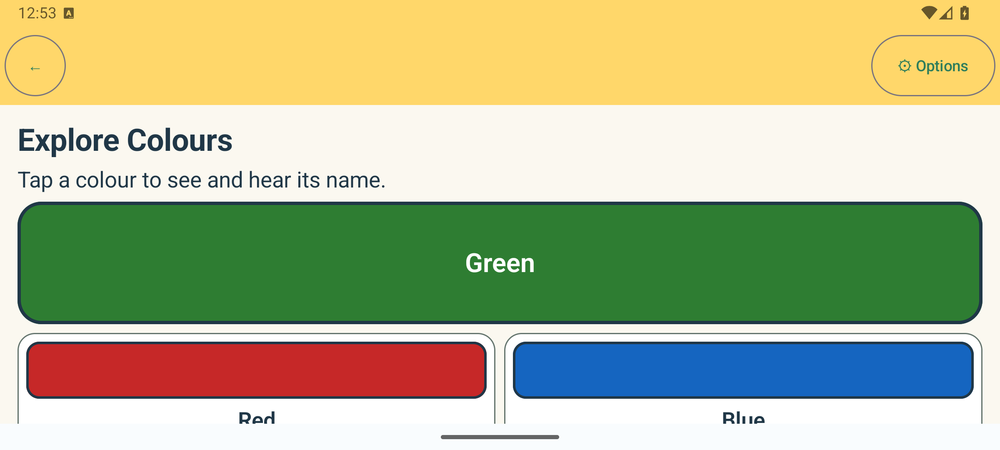
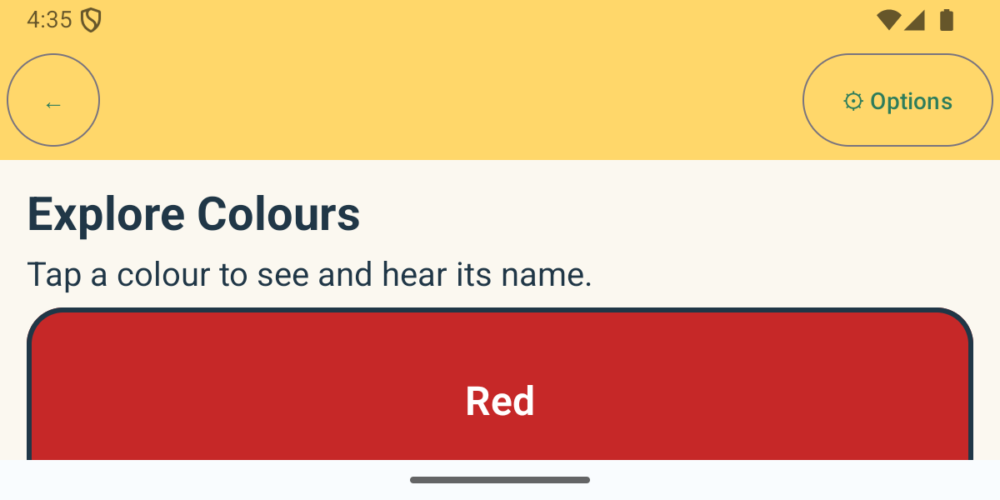
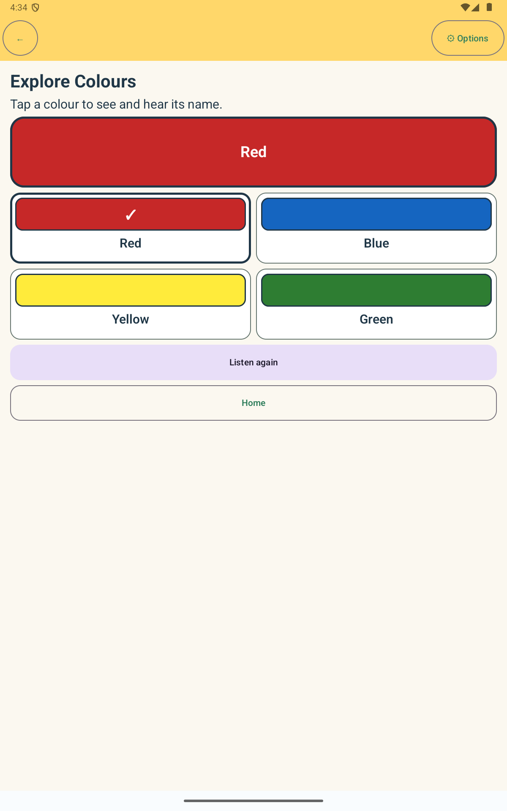
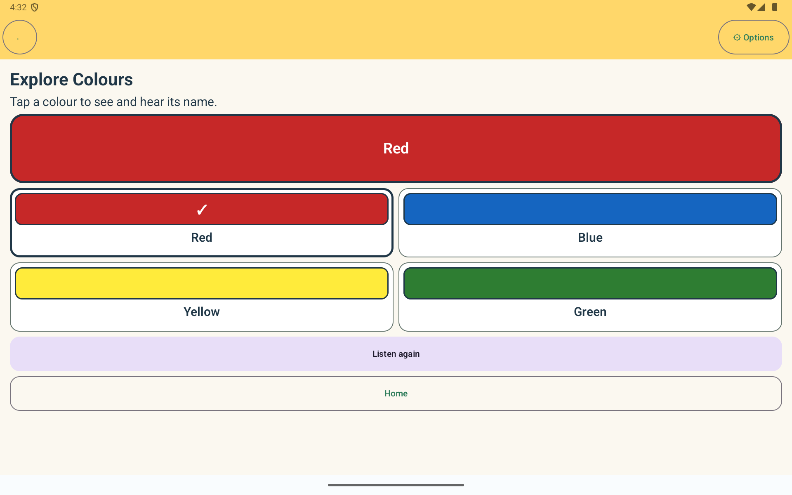
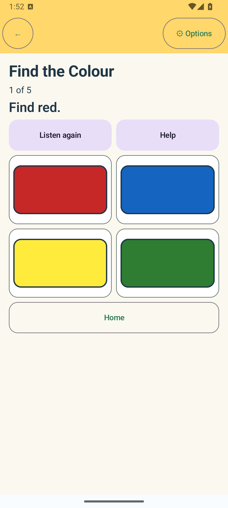
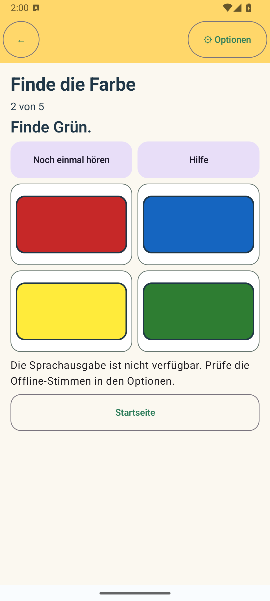
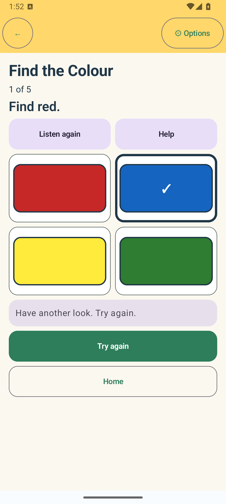
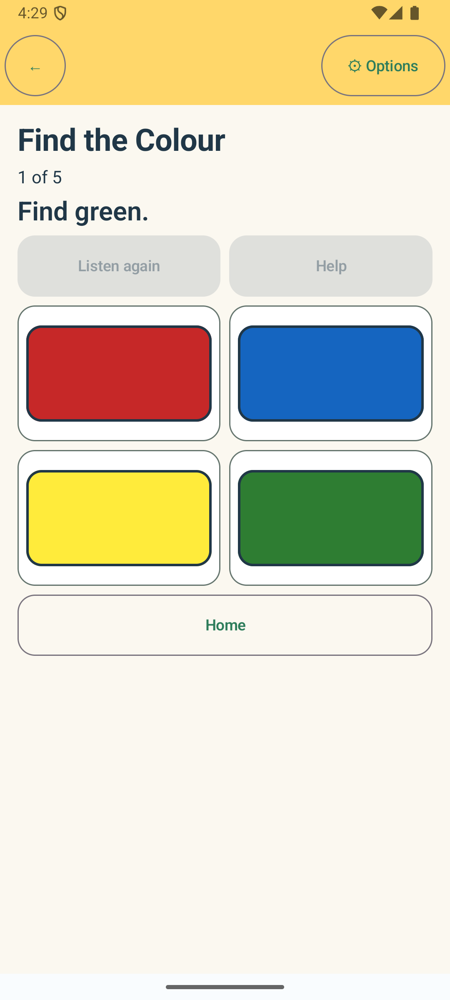
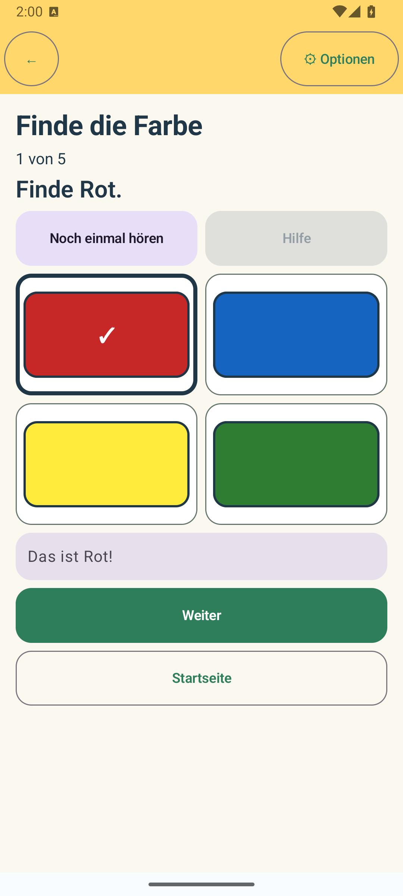
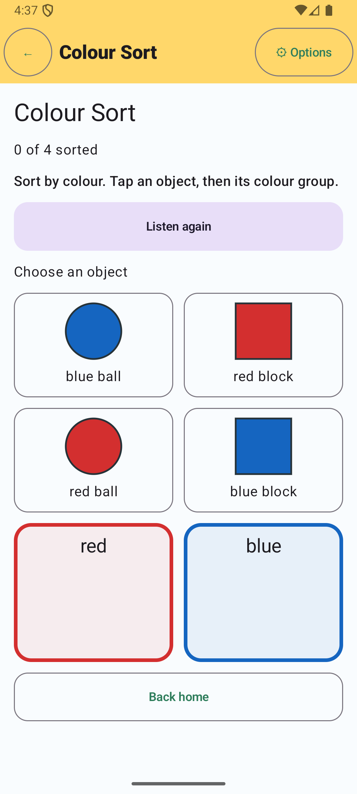
These three original screenshots are retained as historical evidence of the earlier, incomplete review.